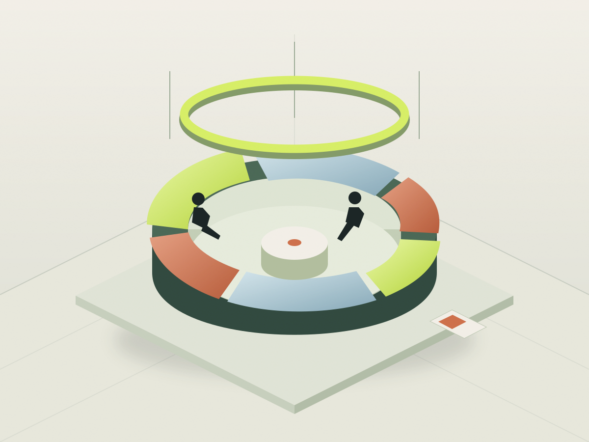

함께 생각하기
내일의 대화
나의 하루에서 시작하는 더 나은 경험에 관한 대화.

어떤 시간을 보내나요?
이동하고 머무르고 연결되는 하루의 순간을 이야기합니다. 대화 카드와 기록 도구를 활용해 서로의 관점을 만나고 함께 새로운 질문을 만듭니다.
이렇게 함께합니다.
- 01오늘의 질문과 경험 카드 선택
- 02작은 그룹으로 일상의 경험 나누기
- 03내일 바꾸고 싶은 한 장면 기록하기
이미지와 설명은 가상 프로그램을 위한 창작 예시입니다.